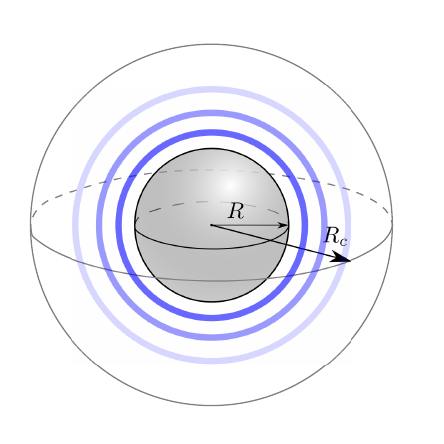
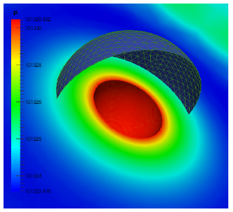
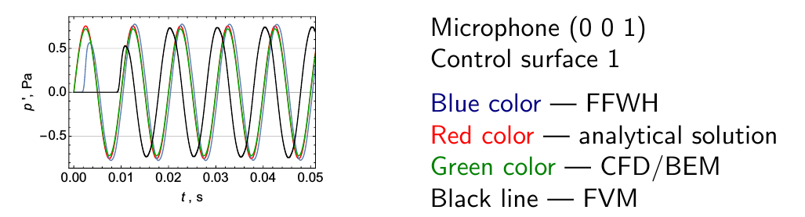

Instructor: Viktoria Korchagova, ISP RAS (Russia)
Training type: Advanced
Session type: Lecture & hands-on
Software stack: OpenFOAM 4.1
Developers of this session:
Development team website: http://unicfd.ru
Presentation language: English
Description:
The noise level reduction is an actual task in aerospace, aviation, marine and automobile industries. There are a lot of different numerical approaches which can be used for noise prediction, for example direct noise computation using finite difference method; finite volume method with hybrid RANS/LES techniques; discontinuous Galerkin method; solution of linearized Euler equations; wave equation; acoustic analogies. The domain of applicability of the last two approaches is restricted mainly by far-field noise prediction, whereas first two can be used for simulation of non-linear effects in the near-field regions of the flow. Results of simulations in the near-field can be used as input data for far-field models.
The training session will start with a short introduction to computational aeroacoustics, employed numerical methods and review of capabilities implemented in libAcoustics library together wih simple examples for verification.
Current implementation of libAcoustics library consists of the following modules for CAA analysis:
All capabilities are implemented in the library using functionObjects or applications providing interfaces to third party libraries (like BEM++) if needed.
Key points of the training track are the discussion of details of implementation for different modules in libAcoustics and verification examples running: noise generated by monopole (see figire below), dipole and cylinders in tandem. After discussion attendees will be prompted to run this cases with their own parameters.

Results of BEM solution to Helmholtz equation are shown on figure below.

It is possible to compare different methods within the scope of libAcoustics library for monopole test - see figure below.

The attendees will require good knowledge of setting up cases, running/modifying tutorial cases as well as basic understanding of programming/compiling OpenFOAM source code. This module will be hands-on. The attendees will require a laptop with a current OpenFOAM installation or - preferably - be able to boot the conference USB stick.
Materials of this tutorial are located at git archive and can be downloaded from http://www.github.com